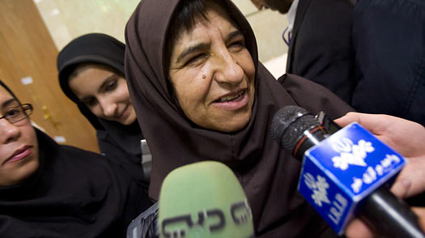

|
|
|
Browsing
Contact Us |
Campaigners |
Face to Face |
Tribune |
Interview |
News |
On the Web |
One Million |
Report
Farsi | Français | German | Italian | Spanish | العربية Also in this section
|
 A Woman as President: Iran’s Impossible Dream?Friday 22 May 2009 Every four years, hundreds of Iranians register to stand as candidates in the country’s presidential election. Women have signed up to run since 1997 — yet no female has ever been certified by the government to run for President. This month, 42 women were among the 475 people who signed up, harboring hope that this time, there was a real chance for a female candidate to stand. Indeed, expectations had been raised when the spokesman of the Guardian Council — the powerful body that vets the candidates — announced on April 11 that it "has never announced its opinion on whether a registrant is a man or a woman. Whenever a woman has been disqualified, it has been because she’s lacked general competence." That was a tantalizing hint of a liberal interpretation for words in the constitution that are often perceived to block the candidacy of women. Standing in the way of women has been Article 115 of Iran’s constitution, where an Arabic phrase, rejale mazhabi-siasi, defining the qualification of candidates appears to be applied exclusively as "religious and political men" — even though it can also be read as "religious and political personalities." Says Jamileh Kadivar, a former member of parliament who heads women’s affairs for the campaign of presidential candidate Mehdi Karroubi: "We are dealing with both legal and institutional discrimination." Among the women who registered this time, the most prominent was the conservative politician Rafat Bayat. She was disqualified in 2005 but insisted on standing again, because, she explained, "I am a political personality!" However, the interpretation of the word rejale rests with the jurists and clerics who make up the Guardian Council. All of them, of course, are men. And on Wednesday, they chose the candidates for the presidency. All of them, once again, were men. Women take some comfort in the fact that they are a constituency that most presidential candidates — with the notable exception of the incumbent Mahmoud Ahmadinejad — are courting. Karroubi announced on Tuesday that he could consider women for six of his Cabinet posts, including the ministries of Foreign Affairs and Islamic Guidance and Culture. Similarly, the aide of another candidate, Mohsen Rezai, told TIME that Rezai will consider a woman as "Hillary Clinton’s Iranian counterpart." "The fact that the candidates are talking about women in their Cabinets is a step forward," says Shadi Sadr, lawyer and women’s rights activist. "It shows that our grass-roots efforts have yielded results." Although women play important public roles in various sectors of Iranian society and constitute the majority of university students, no woman thus far has been appointed to a significant ministry in post-revolutionary Iran. The woman who has held the highest Cabinet position is Massoumeh Ebtekar — better known to American television viewers of 30 years ago as "Mary," the students’ spokeswoman during the U.S. embassy hostage crisis in Tehran. She was appointed by reformist President Mohammad Khatami as his Vice President as well as the head of the Department of Environment. Women, however, are not a solid ideological bloc. Reformist women like Ebtekar and Sadr stand in almost direct opposition to would-be presidential candidates like Bayat who, despite her outspokenness, espouses a different vision of women’s rights. A representative in Iran’s majlis (or legislature), she and her female colleagues reinstituted gender segregation in the seating of the parliament. They worked to reverse efforts by female reformist MPs in the previous session to join the U.N.’s Convention on the Elimination of All Forms of Discrimination Against Women (CEDAW). Such membership would have obliged the Iranian government to abolish discriminatory rules against women regarding such matters as inheritance, child custody and blood money. "We don’t believe in 100% gender equality," Bayat told TIME in her office as head of a governmental institute of higher education. "We believe in the equality of opportunities." How then does she qualify to run for the presidency? She argues that she has held important political positions as well as fulfilled her role as a mother of three children. "They should take that into consideration," she said, sitting behind an image of revolutionary founder Ayatullah Ruhollah Khomeini (commonly referred to as the Imam in Iran) and current Supreme Leader Ayatullah Ali Khamenei. Disappointed but not surprised by the ruling, she said, "I am convinced that the views of both the Imam as well as the Leader support the candidacy of women." Bayat added that her inspiration to become politically active was a visit she paid to Khomeini as a young student, in which she saw firsthand the "immense respect with which the Imam treated his wife." (See pictures of the rise to power of Ayatullah Khomeini.) Azam Taleghani, a political activist and the first woman to have registered as a presidential candidate in 1997, decided not to register this year, though she has done so in previous rounds. As the daughter of one of the revolution’s most prominent ayatullahs, she carries a name with religious capital. "I knew that they wouldn’t qualify any women, just like they haven’t in all previous elections, so there was no point in registering," Taleghani told TIME. "It’s convenient for them to say that it’s not because we’re women but because we don’t qualify as religious-political personalities. It lifts the weight off their shoulders, but what are we all then? Heathens?" Even Bayat, who plays by conservative rules and is not one to push boundaries, said, "Let’s face it: the decision makers are all men." With some resignation and an office that barely speaks of serious campaign preparation, she added, "Not one man among the candidates has so far stood up and asked the Guardian Council to consider women candidates with full equality." She adds, "They said gender wasn’t an issue, but it was because they didn’t consider the imbalance of opportunities between the genders." Still, Sadr said, there is reason for hope. "The fact that dozens of women have registered for the last several rounds of the presidential elections is in itself a good sign. It has shown its impact already in the fact that the candidates talk about giving Cabinet positions to women." |